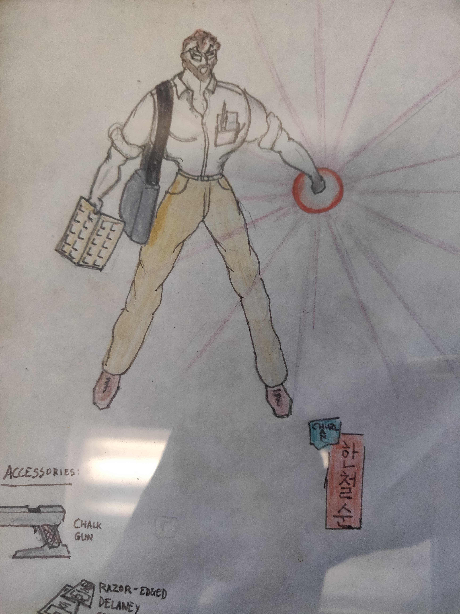
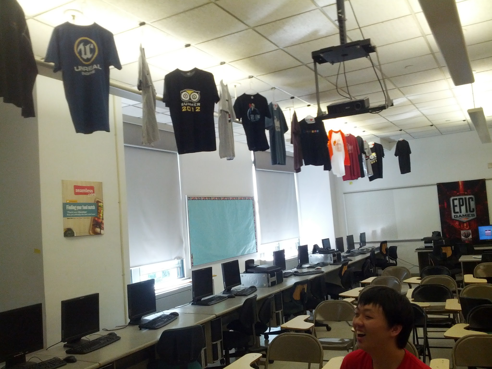

Artifacts Have Stories
Earlier today I was asked about my avatar:

I've been using it for most services for a few months now. It's an image that I've had for ages. I started thinking about using it about a year ago
So, what's the story?
It was back in 1993. I had just started at Stuy. I taught some CS when I was at Seward Park but at the time, I was teaching all math at Stuy. Mostly Geometry to ninth graders but also a smattering of Algebra 2 / Trig and Linear Algebra.
The math department had the fourth floor and some of the third but since I was the new guy I taught most of my classes in the hinterlands of the 7th and 8th floor. At least I had great views of the lower Hudson and the Statue of Liberty.
My math classes were somewhat more formulaic and structured than my computer science classes would end up. Start with a "Do Now" while I checked homework. Kids then present homework that they put on the board. We then did the Do Now which hopefully led into the lesson. I was never super strict but it was pretty structured.
In one class I had a young man, let's call him Charles since I don't know if he's comfortable with my sharing his true identity. He sad in the last two or three rows right next to the window on the south side of classroom. Charles would constantly doodle throughout the class. This never really bothered me. He was always prepared, did well on all assessments and was also ready and able to take part in class discussion regularly.
Apparently, his other teachers weren't as tolerant of his doodling. At the end of the semester he gave me the picture. and said he really appreciated me not hassling him about the doodling. I thanked him and explained that since it didn't adversely affect his performance (and might have helped) and didn't distract anyone else, why would I give him a hard time
The semester ended and I didn't think much more about it although once I got my own office I put the picture in a frame and added it to my collection of office trinkets.
Last year, now at Hunter, I was looking at the picture and I wondered what ever happened to Charles. I hadn't seen him after he was in my class as a freshman. I had started to teach CS and we started to developed our cult so I didn't end up keeping in touch with many of my students from those freshmen math classes. It turned out I was able to find him on Facebook. I don't think he remembered me but he accepted the friend request and we caught up. His family moved out of NY after his freshman year so it made even more sense that I never saw him again.
I keep the picture because it's fun and also to remind me of the circumstances under which I go it. I always appreciate it when a student takes the time to say thanks even when they don't remember anything about the class 30 years later. When I would get little gifts during the holidays, if I'm being honest, I'll have to say that I would frequently throw the gift card or present on the pile but I'd keep and cherish the notes and letters.
Over the years, I accumulated quite a collection of esoteric from former students. From the custom mouse pad with Dave, Spike, Igor, and Oy on it to the Squirtle from Larry to Orion's pinhead, every artifact has a story. They remind me of a person time and place. A connection I had and in many cases I still have. It also creates a bridge to the past both for me and my students.
I've been derided for hanging t-shirts donated by former students from their companies when I had my own classroom at Stuy:

Those naysayers are wrong. Each shirt has a story. It could be Joy's Apple shirt and how she agonized over her employment options, Pawel's Google shirt and his adventures going from Bloomberg LP to the French West Indies to now being a senior programmer at Google or a Digital Ocean shirt from Ben and Moisey and the stories they evoke are far two numerous to list. They create a history and perpetuate the culture. Each has a story.
Looking back, I'm glad that I've kept many mementos from the past. The objects are incidental but the stories give context and inspiration to current students while at the same time reminding me of my past and my shared journey with so many of my students.
Comments
Comments powered by Disqus